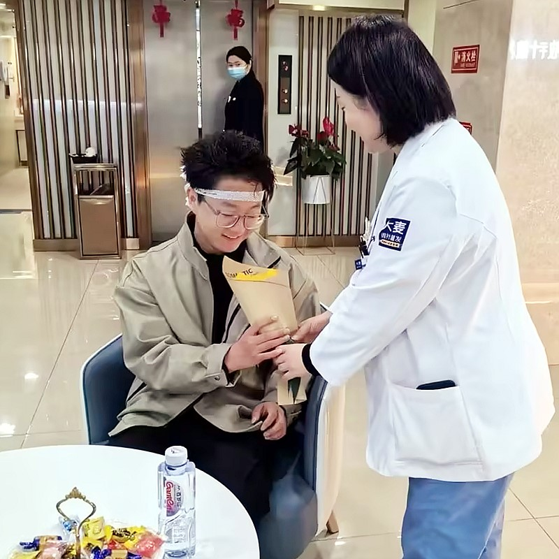

Minimally invasive follicular unit extraction with microneedle precision

Follicular Unit Extraction (FUE) is the most advanced and popular hair restoration technique available today. At Barley, we've perfected FUE with our patented microneedle technology, making the procedure even more precise, less invasive, and with faster recovery. Unlike outdated methods, our FUE procedure leaves no linear scar, gives you natural-looking results, and has you back to work in just 1-3 days.
Why FUE has become the gold standard for modern hair restoration
Combining Chinese innovation with international standards
6 simple steps to your new hairline
Personalized hairline design and treatment planning
Gentle preparation of the donor area for extraction
Precision FUE extraction using microneedle technology
Specialized care and preparation of extracted follicles
Patented implant pen for perfect placement
Complete aftercare instructions and follow-up program
Industry leader with proven results
Pioneer and leader in microneedle hair transplant technology since 2006
Across major cities in China, all with the same high standards
Innovative microneedle and implant pen technology for superior results
Trusted by patients from around the globe for life-changing results
Full English support for international patients throughout treatment
State-of-the-art facilities and strict safety protocols for your peace of mind
See the amazing transformations our patients have achieved


Moments captured with our satisfied patients

Posing with our medical team after successful procedure

Celebrating fantastic results with our doctors

Another satisfied patient shares their joy

Patient with our specialist before discharge

Happy patient with Dr. Chen post-treatment

Excited patient showing their new look
Hear from our satisfied patients around the world
"I researched FUE vs FUT on Google for months! FUE with Barley's microneedle tech was perfect! No linear scar, fast recovery!"
"Minimal invasion, no stitches, and natural results! FUE was exactly what I wanted! Barley's technique gave me amazing density!"
"FUE punch extraction was super precise! No damage to my donor area! My results are natural and I'm back to normal quickly!"
"Individual follicular extraction meant no long scar! I can still wear short hair! That was a huge factor for me! Perfect results!"
"Heard horror stories about other FUE clinics but Barley's quality control gave me peace of mind! Graft survival was amazing!"
"Minimal downtime! Back to work in days! FUE was so much easier than I expected! My hair is growing back perfectly!"
Experience our modern and comfortable facilities

Our state-of-the-art facility

Relax in our premium lounge

Sterile and advanced

Private and professional

Comfortable post-op space

Welcoming entrance
Find answers to common questions about hair transplantation
Contact us for a free consultation
15810155700
+86 13730143529
hairtransplant@qq.com